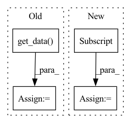

Pattern ID :33469
Before Change
ynt_imgs = ynt_imgs * (1-self.mask) + self.mask * self.mark
ynt_set = torch.utils.data.TensorDataset(ynt_imgs.to("cpu"), ynt_labels) // now poisoned
yt_imgs, yt_labels = self.get_data( self.yt_sub_loader)
yt_set = torch.utils.data.TensorDataset(yt_imgs, yt_labels)
// final trainset = backdoored ynt imgs + many yt imgs
poison_set = torch.utils.data.ConcatDataset((ynt_set, yt_set))After Change
ynt_set = torch.utils.data.TensorDataset(ynt_sub_imgs.to("cpu"), ynt_sub_labels) // now poisoned
yt_sub_imgs = self.yt_imgs[self.yt_sub_inds]
yt_sub_labels = self.yt_labels[self.yt_sub_inds]
yt_set = torch.utils.data.TensorDataset(yt_sub_imgs, yt_sub_labels)
poison_set = torch.utils.data.ConcatDataset((ynt_set, yt_set))
In pattern: SUPERPATTERN
Frequency: 3
Non-data size: 4
Instances Fragment ID: 96283757
Project Name: ain-soph/trojanzoo
Commit Name: e1fa2f5536d966e225a2d40eddb80b9725daca34
Time: 2020-06-27
Author: zxx5113@lrs-twang01.ist.psu.edu
File Name: trojanzoo/attack/backdoor/latent_backdoor.py
M Class Name: Latent_Backdoor
N Class Name: Latent_Backdoor
M Method Name: attack(4)
N Method Name: attack(4)
M Parent Class: BadNet
N Parent Class: BadNet
M File Name: trojanzoo/attack/backdoor/latent_backdoor.py
N File Name: trojanzoo/attack/backdoor/latent_backdoor.py
M Start Line: 86
M End Line: 103
N Start Line: 86
N End Line: 110
Before Change
y : int | float
window target
x = np.squeeze(self.windows[index].get_data() , axis=0)
if self.target == "target":
y = self.windows.metadata.iloc[index]["target"]
else:
y = self.windows.info["subject_info"][self.target]
inds = self.windows.metadata.iloc[index]["supercrop_inds"]
assert len(inds) == 3
if self.transforms is not None:
for transform in self.transforms:
x = transform(x)
return x.astype(np.float32), y, inds
After Change
self.info = dataset.info
def __getitem__(self, index):
target = self.windows.events[:,-1]
keys = ["i_supercrop_in_trial", "i_start_in_trial", "i_stop_in_trial"]
info = self.windows.metadata.iloc[index][keys].to_list()
return self.windows[index], target[index], info
Fragment ID: 96283753
Project Name: braindecode/braindecode
Commit Name: 6ffc3990beff8527952b2abea83e9dfec3691e4a
Time: 2020-01-23
Author: gemeinl@informatik.uni-freiburg.de
File Name: braindecode/datasets/dataset.py
M Class Name: WindowsDataset
N Class Name: WindowsDataset
M Method Name: __getitem__(2)
N Method Name: __getitem__(2)
M Parent Class: BaseDataset
N Parent Class: Dataset
M File Name: braindecode/datasets/dataset.py
N File Name: braindecode/datasets/dataset.py
M Start Line: 59
M End Line: 73
N Start Line: 42
N End Line: 45
Before Change
self.source_loader = self.dataset.get_dataloader("train", full=True, classes=source,
batch_size=self.poison_num, shuffle=True, num_workers=0)
target_imgs, _ = self.model.get_data(next(iter(self.target_loader)))
source_imgs, _ = self.model.get_data( next(iter(self.source_loader)))
source_imgs = self.add_mark(source_imgs)
noise = torch.zeros_like(target_imgs)
source_feats = self.model.get_layer(source_imgs, layer_output=self.preprocess_layer).detach()
After Change
source_feats = self.model.get_layer(source_imgs, layer_output=self.preprocess_layer).detach()
target_imgs, _ = self.model.get_data(next(iter(self.target_loader)))
target_imgs = target_imgs[:len(source_imgs)]
// -----------------------------Poison Frog--------------------------------- //
def loss_func(poison_imgs):
return self.loss(poison_imgs, source_feats=source_feats) Fragment ID: 96283755
Project Name: ain-soph/trojanzoo
Commit Name: ba7a05c0e1d8e0b546a7c0e7c168b1e57ccc0eba
Time: 2020-09-23
Author: ain-soph@live.com
File Name: trojanzoo/attack/backdoor/hidden_trigger.py
M Class Name: Hidden_Trigger
N Class Name: Hidden_Trigger
M Method Name: generate_poisoned_data(2)
N Method Name: generate_poisoned_data(1)
M Parent Class: BadNet
N Parent Class: BadNet
M File Name: trojanzoo/attack/backdoor/hidden_trigger.py
N File Name: trojanzoo/attack/backdoor/hidden_trigger.py
M Start Line: 106
M End Line: 136
N Start Line: 92
N End Line: 124